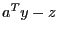
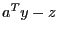

Next: DualSVio Up: Quality Attributes Previous: ConstrSResidualSum
| Type: | double |
|---|---|
| Modifiable: | No |
Reporting dual constraint violations for the simplex solver is
actually more complex than it may appear, due to the treatment of
reduced costs for bounded variables. The simplex solver introduces
explicit non-negative reduced-cost variables inside the algorithm.
Thus,  becomes
becomes  (where
(where  is
the dual vector and
is
the dual vector and  is the reduced cost). In this
formulation, errors can show up in two places: (i) as bound violations
on the computed reduced-cost variable values, and (ii) as differences
between  and
is the reduced cost). In this
formulation, errors can show up in two places: (i) as bound violations
on the computed reduced-cost variable values, and (ii) as differences
between  and  . We report the former as
. We report the former as
DualVio and the latter as DualResidual.
DualVio reports the maximum (unscaled) reduced-cost bound
violation.
Only available for continuous models.
For examples of how to query or modify attributes, refer to our Attribute Examples.